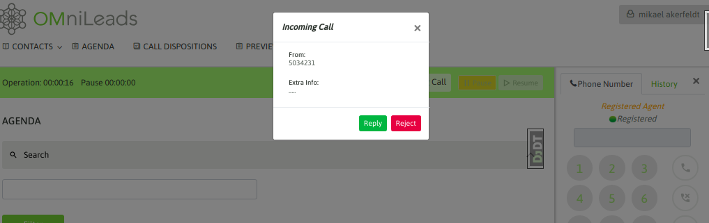
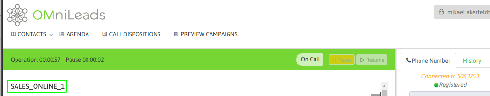
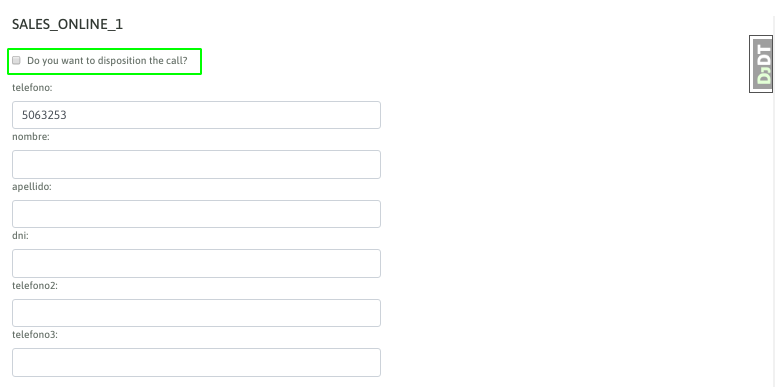

Atención de llamadas entrantes¶
Como bien sabemos de la sección de «Configuración inicial», el sistema se puede configurar para que las llamadas entrantes generen un «Ring» sobre el webphone del agente, brindando a éste último la posibilidad de elegir atender o no la llamada, o bien configurar para que las llamadas entrantes ingresen y conecten directamente sobre el agente con una indicación de audio tipo «beep», para luego dejar a ambos extremos de la llamada en linea.
En la figura 1 exponemos el comportamiento con Ring.
Figure 1: inbound call ring
Si en cambio la configuración asociada al agente implica que la llamada se enlace directamente, entonces al igual que en las campañas predictivas, el agente escuchará el «beep» que anuncia la nueva llamada conectada y también se informa en la pantalla el nombre de la campaña entrante a la cual pertenece la llamada conectada.
Figure 2: inbound call campaign
Gestión de contactos¶
Como las llamadas entrantes dependen de que el número de teléfono desde el cual se origina la llamada esté por un lado cargado en el sistema como base de contactos y además de que el número llegue al sistema como fue cargado, suele ser normal que el agente se encuentre sin datos de la persona que llama, al momento de conectarse la llamada.
Figure 3: inbound call without contact
En este caso, el agente puede elegir calificar o no la llamada. En el caso positivo entonces se procede con la carga del contacto y posterior calificación de la llamada.